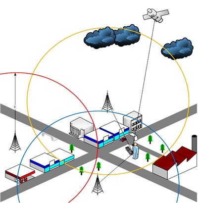
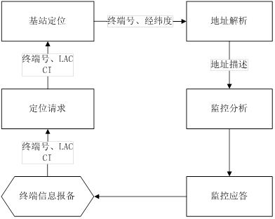
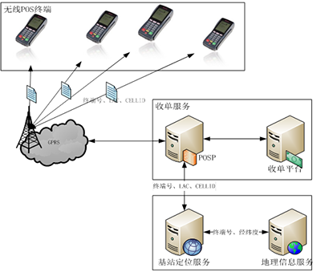

POS终端无线定位方案
2012年9月，受某公司委托，新大陆公司客服人员展开对其部署在某省的POS终端进行抽样测试，抽检规模为三地市合计101台。然抽检过程中，我司客服人员发现准备其中有9台POS终端发生移机，由于商户并不配合抽检工作，测试工作最终无法完备进行……
方案背景
由上述案例中，可发现目前收单结构的POS终端管理，一直经受着由于商户移机而带来的不合规商户操作(虚构交易、虚开价格、现金退货)的风险挑战。据了解，中国银行根据《刑法》第177条和第196条以及相关规定，结合信用卡现况，将POS违规移机作为信用卡欺诈的一种类型，纳入风险管控。
然则在移机风险防控的措施中，收单结构更多的依靠连带责任、巡检、抽查等等手段，并没有很好的信息化手段，终端管理人力成本较大，业务人员拓展商户顾虑多。
而无线金融POS终端由于其移动特性，在快速部署与资源应急调配上具有先天优势，也因此潜藏更大的移机风险，且抽检这样的管控手段对之无效，因此收单结构在部署无线金融终端时存在较大顾虑。
鉴于上述状况，新大陆公司关注客户所需，率先在移动终端上支持GPS模块，可支持对无线金融POS终端实现轨迹管理，以基于GPS技术设计的无线终端定位方案实现POS终端的交易位置定位服务，有效解决了收单结构所关心的工作区域管理和监控问题。但在实际投产过程中，我们发现在无线金融POS终端上加载GPS模块，成本昂贵且存量无线POS终端改造难度较大，同时对电池的续航能力要求高，这些都限制了GPS管理的方案实施。
考虑到无线金融POS终端虽然具备移动特性，但基本上还是属于室内应用为主，而GPS信号则受到建筑物的干扰较大，定位效果不一定理想。在此情况下，新大陆公司综合考虑POS终端产品定位需求及应用场景，在无线终端上导入基站定位技术，设计一套POS终端产品定位服务系统，最终实现多级手持移动终端精确定位方案，向客户提供高效、稳定的POS终端产品定位服务。
目前通过项目实践，新大陆公司通过基站定位技术已经为广发银行以及快钱、支付宝、银商等第三方机构，实施了不同精度的终端定位方案，为客户规避安全风险，实现资产管理提供有利措施，为银行监管提供了信息化手段和监管依据。
设计原理
以GPRS为例，即便是没有GPS功能的手机，也可以通过手机增值服务向移动运营商或者地图服务商获取自身位置信息，例如中国移动动感地带提供的动感位置查询服务等。其实现原理为移动运营商掌握了自身基站的位置信息（经纬度等），而手机工作时必然会接入一个明确的基站，移动运营商通过该基站的位置信息自然可以粗略估算出手机用户的位置信息，而地图服务商也通过信息收集车辆等各种手段获得类似信息进而转换成位置服务。

无线POS终端在工作时，也活跃在GSM网中，自然也可以通过获取基站信息而对自身进行定位，因此基站定位技术对工作中的无线POS终端，可以说是没有盲区的。虽然对应GPS定位系统，基站定位的误差较大，但无线金融POS终端的位置管理需求远大于轨迹管理需求，所以基站定位技术以其良好的性价比更加适用于无线POS终端的管理。
目前新大陆公司已经在支持无线的金融POS终端上导入了基站定位技术，通过终端无线通讯模块(GPRS /CDMA)的底层支持，均有能力从GSM网获取当前服务无线终端的基站基础信息（LAC与CI等），通过这些信息可以结合后台位置服务，转换成不同精度的终端位置信息，进而完成对终端的监管。同时结合GPS模块，新大陆无线终端还可以支持室外GPS、室内LBS的更高精度定位管理。
方案设计介绍
在方案实施的前期调研中，我们发现不同类型客户对无线POS终端的监控需求各有不同，因此方案在实施中归纳总结了以下需求。
? 所有的收单机构对活跃终端的位置有监控需求。
? 所有的支付公司对自有终端有资产管理的需求。
? 物流类型企业对终端的工作轨迹有监控需求。
? 部分企业希望可以实现对人员管理。
鉴于以上需求，新大陆POS终端无线定位服务平台框架设计中关注以下设计要点。
定位请求时机
无线POS终端在工作过程中，按照指定规则向基站获取基站信息，并将之送往定位服务平台。定位服务接收基站定位信息后，转换成对应的地址信息，通过地址解析判断是否发生移机，并将监控指令发送终端。
可以使用的定位请求规则有：交易上送信息、终端报备信息等。

定位精度设计
根据客户的业务需求，系统规模可以在上图基础上进行裁剪与增加，进而提供以下几个精度等级的定位服务：
? 基于LAC的定位：基站信息中的LAC是位置区码,覆盖一片地理区域,初期一般按行政区域划分(一个县或一个区)，由此可以进行最基础的监管，限定无线终端在区级以上地域范围内使用。
? 基于CELLID的定位：基站信息中的CI即CELLID，是标识一个GSMPLMN内唯一一个基站，以此信息可以分析终端在某个基站服务器内，即某个确定的经纬度附近，可以限定无线终端在某个基站范围内使用，也可以通过多个基站的范围覆盖的集合限定终端在大概的小范围区块内使用。
? 多点定位：目前新大陆公司实现的基站定位还可以通过多个基站覆盖区域的并交运算，限定无线终端在更精细的区域内使用，限定的精细程度受影响的因素有：基站部署的密集度、单个基站的信号覆盖能力等。
? 轨迹应用：通过TOA的下行时间估算和多基站定位，可以通过算法计算出终端的移动轨迹。
? 双模定位：室外GPS定位，室内基站定位的组合定位方式。
系统功能设计
无线POS机定位监控系统实现了三大功能：
? 预警功能。一旦检测到无线POS机离开安全区即自动告警，银行监管人员可以此为依据立即中止该无线POS机的接入。
? 管理和定位功能。可对用户资料信息进行查询检索等常规管理，同时，实时定位全部无线POS，对有套现嫌疑的无线POS机，可协助金融机构确定机器位置。
? 安全功能。利用SIM卡捆绑技术杜绝用户私自换卡现象，商户在使用无线POS机期间无法脱离该系统的监控和定位，解决了各商业银行和第三方支付客户规模使用无线POS机的后顾之忧。
网络拓扑框架

? 网络中的无线终端具备获取基站信息的能力，并在指定时机上送。
? 收单服务时，增加定位服务的接口。
? 地理信息服务是根据业务需求可选的。
? 增加地理信息服务后的系统，可以结合地图数据和搜索引擎，直观的建立终端部署的GIS视图。
成功案例简介
广发银行
作为广发银行最大的POS产品供应商，今年年初广发银行就无线终端的风险管控与我司开展交流。最终经过多轮的交流讨论，我司向广发银行推荐了无线POS基站定位解决方案，在6月份完成了定位系统的开发，并成功上线。
广发银行采用的基站定位系统是基于cellid的定位方式，在定位的基础上扩展了地理信息服务。目前已有1000多台无线设备上线运行。根据广发银行系统的上线，有效的保证了无线设备的风险管控，为广发银行大规模拓展无线POS终端市场解决的了后顾之忧。
快钱
作为快钱的主要POS产品供应商，近几年新大陆公司从最初的建设TMS系统开始，一直为快钱公司的终端资产管理做系统性的服务。由于快钱作为第三方支付公司，终端保有量和使用量巨大，仅2011年向新大陆采购的终端就有数万。随着快钱业务发展，涉及行业类型较多，特别在与物流、保险等行业中，无线终端的使用率更高。为此新大陆公司2011年开始向快钱推荐了基站定位技术，通过无线POS定位服务系统的成功实施，为快钱首次实现了基站定位服务。
目前快钱使用的是基于cellid的定位方式，基本满足无线终端的风险管控需求，未来还可以结合新大陆公司的TMS系统进一步完善快钱终端资产管理。
上海银商
上海市区内商户密集，基于cellid的定位方式不满足银商的监控需求。根据上海市区基站部署密集度高、基础建设好、覆盖范围重叠较多的特点，较为适合通过多基站协调定位完成更高精度定位监控。
2012年6月新大陆公司与上海银商合作，在基于cellid的定位方式基础上，扩展为多基站定位模式并于8月完成实施。